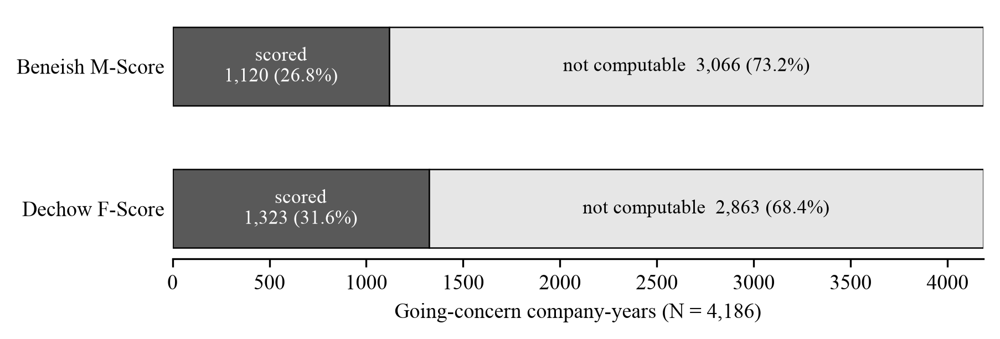
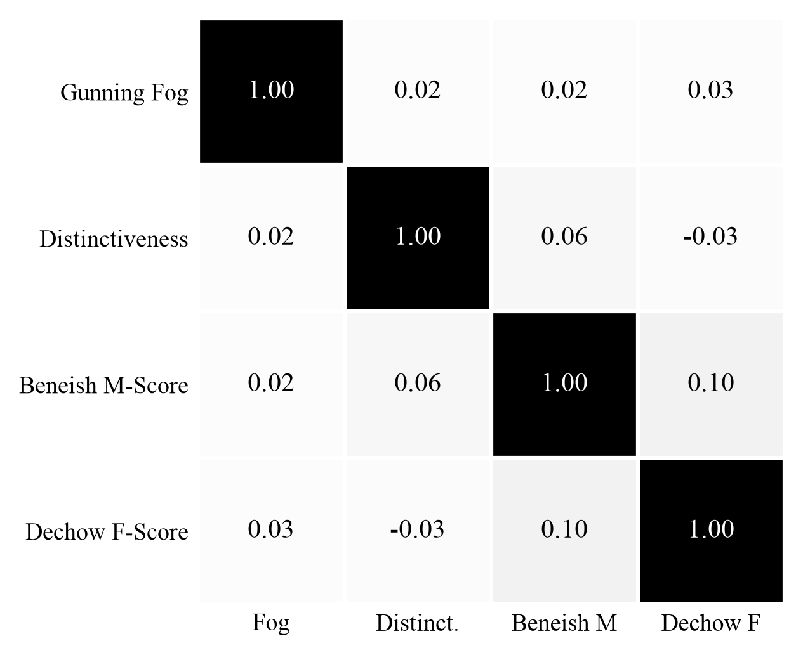
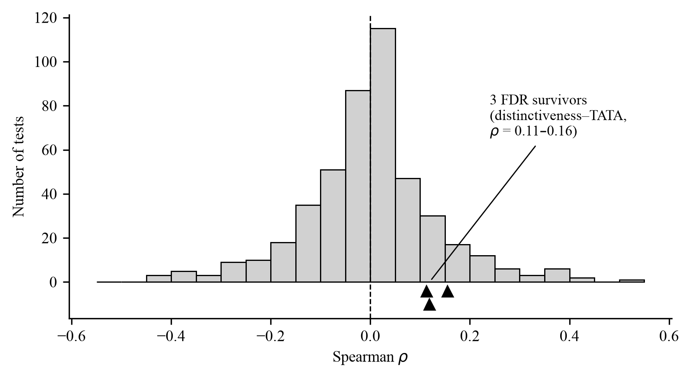
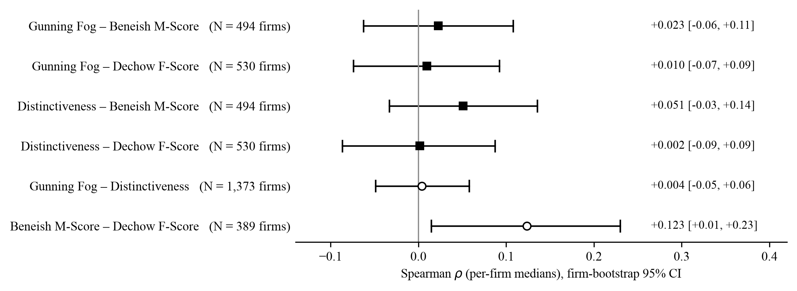

Disclosure Atlas is a browser-based semantic search research instrument for SEC disclosures. I built this to study the relationship between how distressed companies write their disclosure notes and their financial condition. It maps 161,469 footnotes from 3,253 public companies and allows you to search by meaning and compute financial quality scores at scale. To test my findings, I built a systematic screening framework and ran hundreds of pre-registered tests, and implemented safeguards to prevent false discoveries and p-hacking, including:
- mandatory corrections
- locking in the tests before running them
- reporting every result
What I found. My findings suggest that among companies issued a going-concern warning, the way they write their disclosures has no meaningful relationship to their financial-quality measures. This was tested rigorously with 460 tests, only 3 of which survived, and none involved the financial scores. Overall, this paper suggests disclosure language reflects the standardized conventions public companies follow rather than their financial condition.
Abstract
Does a company’s writing style and form indicate problems in its financial statements? My original study broadly examined this potential association between several disclosure note types and financial quality signals and found a null. I decided to dive deeper into these disclosure notes and focus specifically on going concern companies, as these distressed companies would most likely indicate any correlation between writing style and indications of financial issues. I built a research instrument that aggregated 161,469 footnotes from 3,253 public companies to aid in my study and analysis of this question. This tool measures the disclosures’ distinctiveness compared to other companies and the complexity of their language. These measures are then compared to the Dechow F-Score and Beneish M-Score to assess their relation to a company’s financial condition and potential manipulation risk. The study found no association between the way companies write their financial disclosures and their financial condition. To ensure the null wasn’t something I overlooked, I conducted a systematic screening of 460 unique tests across all subgroups and measures and applied FDR and Bonferroni statistical corrections for the extensive number of tests. Of the 3 associations that survived (ρ ≤ 0.16), they were essentially meaningless. Overall, this study suggests even companies in distress don’t reflect their financial conditions in their disclosure notes. This research instrument was built using Claude Code and reflects AI’s ability to enhance and accelerate the research process by enabling data aggregation, testing, and review at scale, while emphasizing the importance of proper safeguards when using AI to prevent false discoveries and maintain data integrity.
Figures
These four figures come straight from the paper, with my captions as written. Each one is regenerated from the real data by the replication code in the repository.




Methodology
Data
The corpus is 161,469 disclosure footnotes drawn and ingested from the SEC EDGAR filing system, covering 3,253 U.S. public companies across 6 disclosure types. The going-concern cohort is 4,186 company-years from 1,373 companies, restricted to 2010-2026. Of the 4,186 company-years, only a subset can compute the Dechow F-Score (1,323 company-years, ~31.6%) and the Beneish M-Score (1,120 company-years, ~26.8%). These going concern companies frequently have gaps in their reporting and overall incomplete financial statements. The most distressed companies are the ones that these standard screens can’t even compute.
Measures
Language was analyzed for readability and distinctiveness through two measures. Readability was calculated for the disclosure notes through the Gunning Fog Index. Distinctiveness was assessed by embedding each footnote with bge-small-en-v1.5, a pretrained embedding model (384 dimensions, L2-normalized), computing the average embedding for each peer group, and measuring the cosine distance of each footnote from that average. No model was trained for this project. The financial quality measures are the Dechow F-Score and the Beneish M-Score, computed from SEC XBRL financials. Both models are screens, not verdicts, and this study treats them as such.
Statistics
A well-known characteristic of the Dechow and Beneish models is that near-zero denominators in their component ratios cause extreme outliers. Because of this, I used medians, IQR, Spearman rank correlations, and Wilcoxon rank-sum tests rather than means, standard deviations, and Pearson correlations. Rank-based methods rely on the order of values, so they are not impacted by extreme outliers.
The systematic screen
I developed a systematic screen to find any associations that show up in specific subgroups, rather than only using one test. The screen pairs every financial and disclosure measure across all subgroups (industry, entire cohort, enforcement status, and 5-year buckets). The tests were enumerated through a deterministic rule, and there were 460 total tests. Every test in the family is reported. Each screening is recorded with a hash that marks what is being tested and when the test was conducted, to prevent secretly adding, removing, or reframing tests after seeing the outcome. Two corrections are mandatory across all tests: the Benjamini–Hochberg FDR and the Bonferroni. These safeguards are intended to make selective reporting a deliberate act rather than a default.
Results
Within going-concern companies, disclosure form and financial quality signals are not associated. Here is what the numbers show:
- The disclosures are dense and standardized. The median Gunning Fog Index is 19.6, which reflects about a graduate-level reading level. The median distinctiveness is 0.115 with an IQR of 0.060, so these disclosures are fairly similar to their peers.
- Every association between disclosure form and the financial scores is negligible. Readability with Dechow (ρ = 0.03), with Beneish (ρ = 0.02). Distinctiveness with Dechow (ρ = −0.03), with Beneish (ρ = 0.06). Two associations were nominally significant at the five percent level, Dechow with Beneish (ρ = 0.10, p = 0.002) and distinctiveness with Beneish (ρ = 0.06, p = 0.045). Both of which did not survive the mandatory correction measures.
- Going concern companies with a history of SEC enforcement are practically indistinguishable from those not enforced. The enforced subsample is only 179 company-years and 57 firms, so these results are suggestive rather than conclusive.
- Of the 460 tests in the systematic screen, three survived the FDR correction and only one survived the Bonferroni. The largest survivor was ρ = 0.155. All three reflect one association between distinctiveness and one of the eight Beneish ratios (total accruals over total assets). It appears in nested subgroups, it carries the opposite direction in the full corpus, and no surviving association involves the composite Dechow and Beneish screens.
- The non-association gets stronger at the company level. Readability with Dechow (ρ = 0.01, p = 0.83), with Beneish (ρ = 0.02, p = 0.62). Distinctiveness with Dechow (ρ = 0.002, p = 0.97), with Beneish (ρ = 0.05, p = 0.26).
My findings suggest that financial disclosure form is so standardized that it doesn’t reflect a company’s specific financial reality, but rather displays companies’ general professional conventions of disclosure norms and the legal templates that they follow. These claims are bound by the focus on structural language properties (readability and distinctiveness) rather than semantic content.
How it was built
I built Disclosure Atlas with Claude Code (the tool, pipeline, database, systematic screener, and analysis). I planned and directed the research design, cohort definitions, and measure choices, and interpreted the results. Because AI can hide errors, I verified and computed the values separately and checked them with third party libraries. Financial scores were recomputed from the raw inputs with zero mismatches (11,717 Dechow and 31,391 Beneish company-years). A standalone evaluation harness in the repository re-derives the core results with independently written code. See the AI-Use Disclosure in the paper for the full details.
Citation
If you build on the paper or the tool, cite it like this:
@unpublished{munger2026disclosure,
author = {Munger, Joshua},
title = {Disclosure Notes Relation to Financial Quality Metrics
in Going-Concern Companies: Evidence of Non-Association},
note = {Working paper, University of Missouri,
School of Accountancy},
year = {2026},
month = {June},
url = {https://simplydose.app/disclosure-atlas}
}